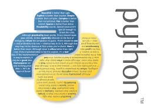

Códigos Python
Agora você vera um pouco de codigos usados em Python

Abrindo e fechando o interpretador
A melhor forma de aprender a programar é usando um interpretador em modo interativo. Dessa forma você pode digitar comandos linha por linha e observar a cada passo como o computador interpreta e executa esses comandos. Para fazer isso em Python, há duas maneiras:
1-executar o interpretador em modo texto (chamado "Python (command line)" no Windows, ou simplesmente python no Linux) 2-usar o IDLE, que é um ambiente baseado em janelas.
Não importa o Sistema Operacional que você está utilizando, o IDLE, vai execultar da mesma forma, e quando for instalado, aparece-rá uma mensagem assim:
Python 2.5.1 (r251:54863, Oct 5 2007, 13:50:07)
Uma calculadora melhor
Vamos então aproveitar a deixa e escrever algo. Experimente escrever uma expressão aritmética bem simples, como 2+2:
>>> 2+2
4
>>>", line 1", line 1, in
Conversor de dólares
Digamos que você tem uma loja de discos importados, e precisa constantemente converter
dólares em reais. O valor do dólar para venda em 20/05/1999 é de 1.686. Para
converter US$9,95 e US$11,95 em reais você pode digitar:
>>> 9.95 * 1.686